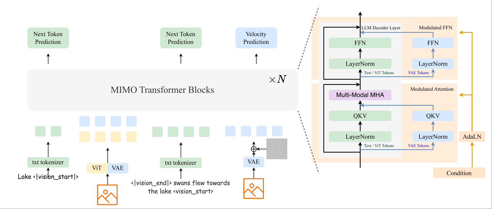
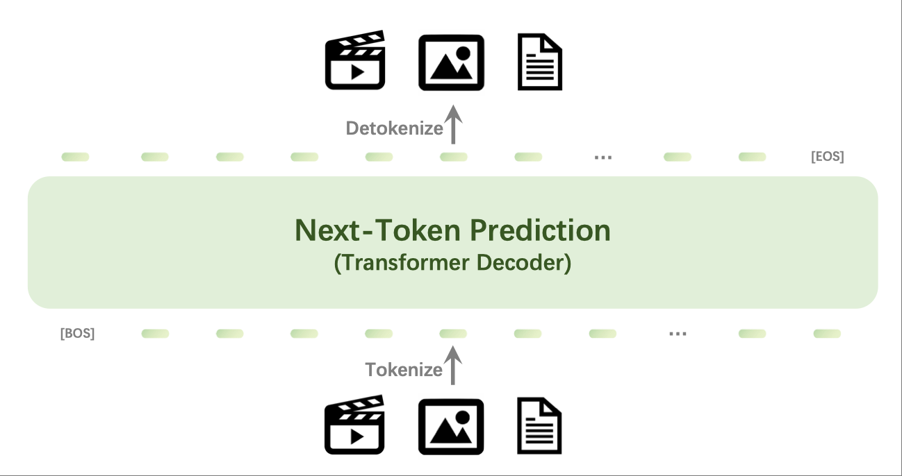
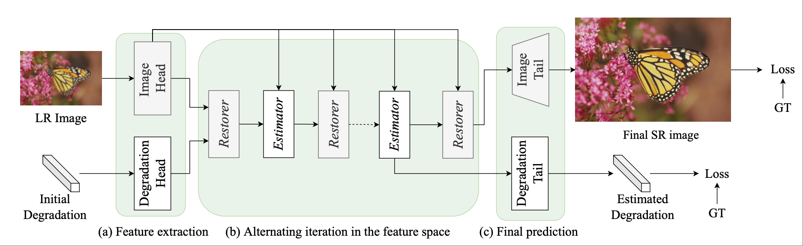
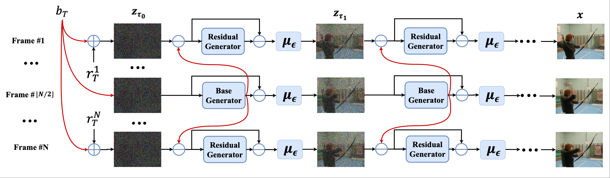
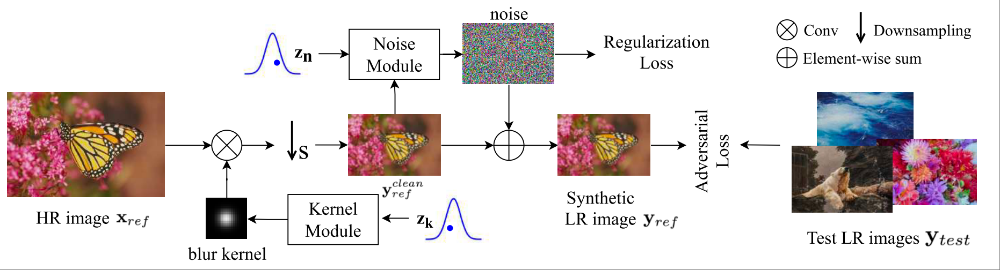
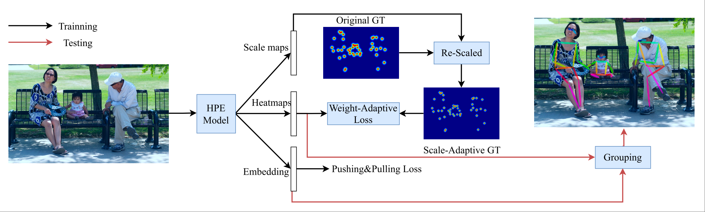
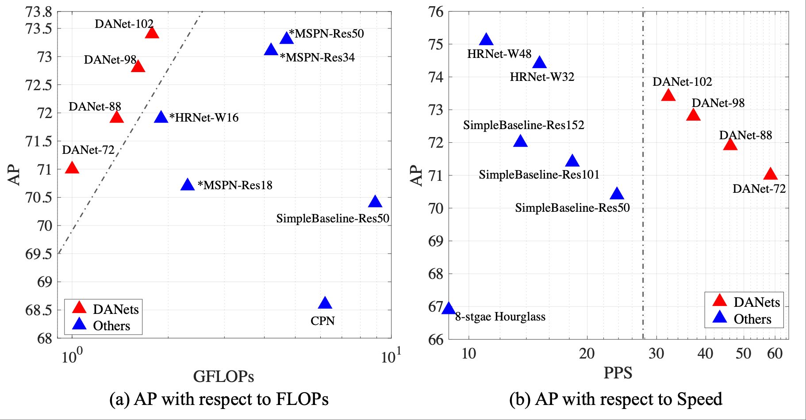
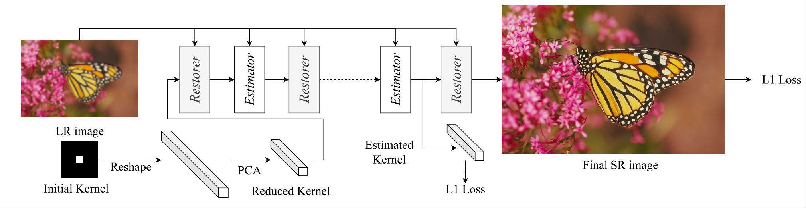

Zhengxiong Luo

About Me
I received my bachelor's degree in Mechanical Engineering from Shanghai Jiao Tong University (SJTU) and my Ph.D. from the Institute of Automation, Chinese Academy of Sciences (CASIA). From July 2023 to February 2025, I worked as a full-time researcher at the Beijing Academy of Artificial Intelligence (BAAI). I am currently a full-time researcher at ByteDance Seed.
Research Interests
My current research focuses on unifying multimodal generation and understanding. My previous work has covered human pose estimation, low-level vision tasks, and video generation.
Selected Publications [Full List]
-

arXivarXiv preprint arXiv:2505.05472, 2025. -

arXivarXiv preprint arXiv:2409.18869, 2024. -

IJCVInternational Journal of Computer Vision (IJCV), 2023, volume 131, pp. 3152-3169. -

CVPRIEEE/CVF Conference on Computer Vision and Pattern Recognition (CVPR), 2023, pp. 10209-10218. -

CVPRIEEE/CVF Conference on Computer Vision and Pattern Recognition (CVPR), 2022, pp. 6063-6072. -

CVPRIEEE/CVF Conference on Computer Vision and Pattern Recognition (CVPR), 2021, pp. 13264-13273. -

ICMEIEEE International Conference on Multimedia and Expo (ICME), 2021, pp. 1-6. -

NeurIPSAdvances in Neural Information Processing Systems (NeurIPS), 2020, volume 33, pp. 5632-5643.
Powered by Jekyll and Minimal Light theme.